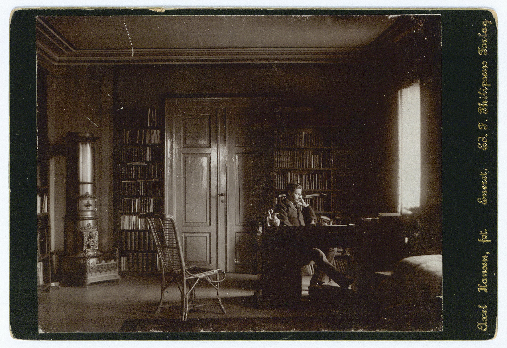
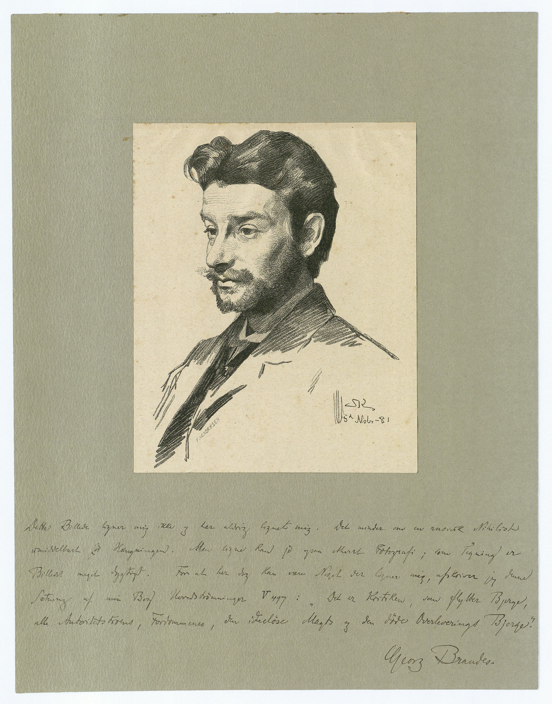
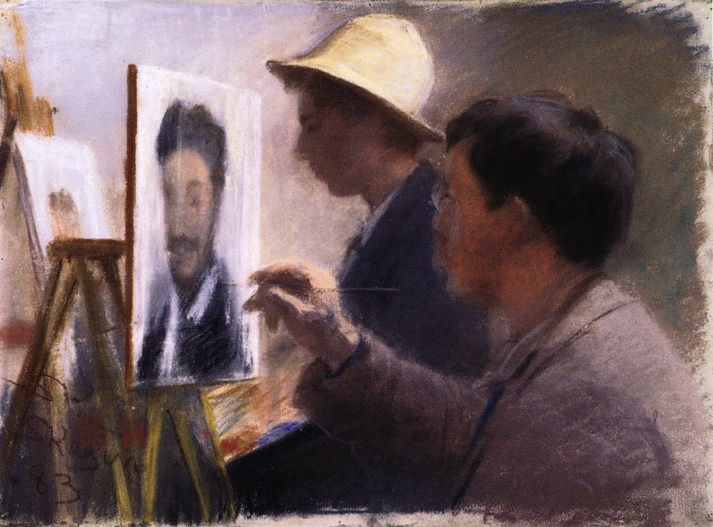
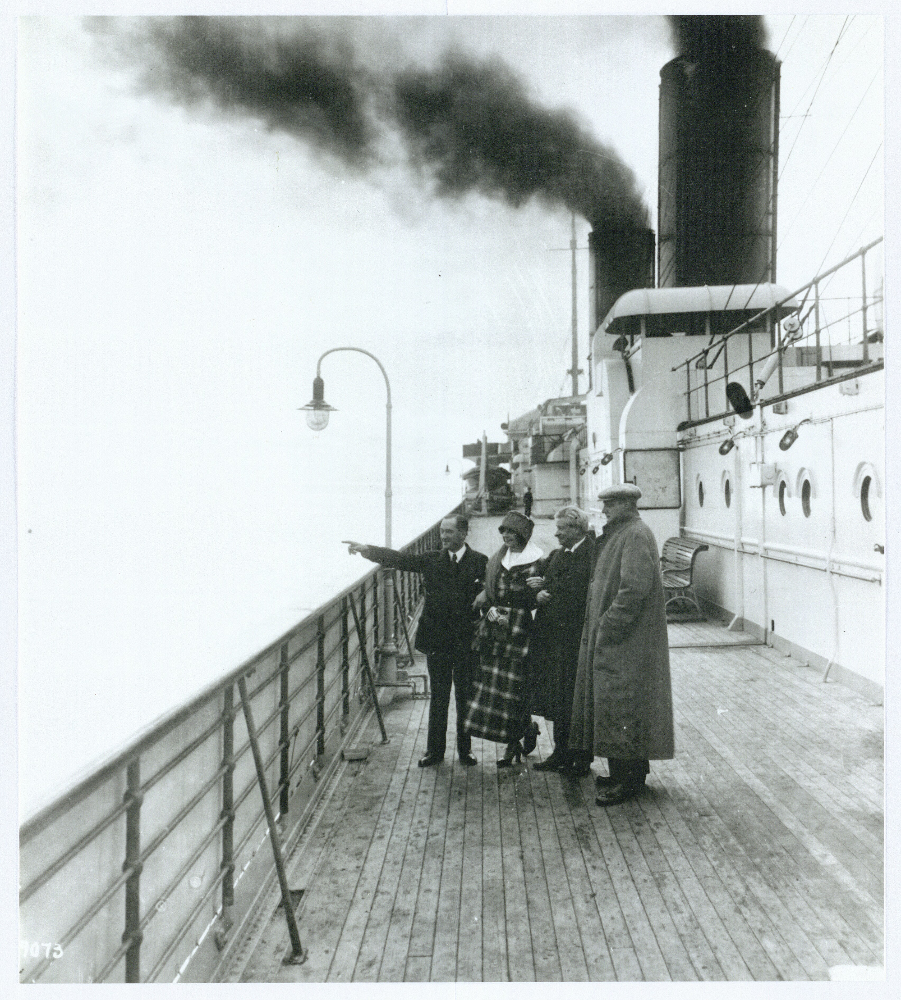

af
I en tid, hvor globaliseringen har intensiveret både kulturmøder og -sammenstød, er der brug for historisk perspektiv og indsigt. Et afgørende inspirations- og diskussionsoplæg om forholdet mellem det nære og det fremmede er Georg Brandes’ hovedværk Hovedstrømninger i det 19. Aarhundredes Litteratur, der på www.georgbrandes.dk udgives i en videnskabelig, flersproget udgave, ledsaget af supplerende ressourcer og værktøjer.
“Den sikreste vej til at slå sig op for en begyndende dansk skribent er endnu bestandig som for 24 år siden den at skrive et eller andet imod mig”, erklærede en selvbevidst Georg Brandes i 1895 (”Et dansk Forfatterskabs Vilkaar”, Politiken, 2. marts 1895). Ordene kan gælde endnu her i dag, hvor Brandes stadig fremkalder stærke holdninger og følelser i den danske offentlige debat. Dér er han fortsat tilstedeværende, som én af de få tilbageværende danske stemmer fra 1800-tallet. Han har formået at dele vandene lige siden han trådte op på talerstolen i auditorium 7 i Københavns Universitets hovedbygning den 3. november 1871 kl. 18 og indledte sin forelæsningsrække over nyere europæisk litteratur Hovedstrømninger i det 19. Aarhundredes Litteratur, der udkom i bogform fra 1872 til 1890. I sig selv er det en bemærkelsesværdig bedrift. Men den lokale virak har også medvirket til at overskygge selve det litterære værk som gav anledning til stridighederne, samt det store og indviklede internationale efterliv som værket har fået. Forsknings- og udgivelsesprojektet Digital Currents / Digitale Hovedstrømninger leverer nye bidrag og redskaber til forskningen i begge dele.
 Georg Brandes i arbejdsværelset, ca. 1890. Foto: Axel Hansen
Brandes’ Hovedstrømninger i det 19. Aarhundredes Litteratur var et akademisk arbejde og samtidig et stykke engageret kulturkritik. Værket adresserede de store europæiske landes (litteratur)historie, men også samtidens provinsielle danske åndsliv. For det danske publikum var dramaet således tænkt som et lærestykke: ”Jeg tror, at vi af dette store drama kunne uddrage en lære for os selv. Vi er nemlig denne gang som sædvanlig en 40 år tilbage for Europa”, skrev Brandes med brug af det nationale vi, der tydeligt træder frem som adressat. Danmark var faktisk enestående i europæisk sammenhæng ifølge Brandes, men i negativ forstand: ”Intetsteds Europa over så exalterede idealer og ikke mange steder et plattere åndeligt liv”, hævdede han på polemisk vis (”Indledning” i Hovedstrømninger … bd. 1: Emigrantlitteraturen, 1872, s. 25).
Dermed havde han også defineret en rolle for sig selv i det nationale drama: som den der skulle vække især forfatterne til dåd og få dem til at skrive virkelighedsnært og engageret i nutiden. Anspore dem til at sætte ”problemer under debat”, som han skrev med et udtryk der straks blev til en kliché – og som stadig er det i dag. Med indsatsen indvarslede Brandes en ny tid i Danmark, ”det moderne gennembrud”, som han selv senere navngav epoken. En af det moderne gennembruds forfattere, Nobelpristageren Henrik Pontoppidan, fortæller i romanen Lykke-Per (1898-1904, 1905) om ”den europæiske kulturbølge”, som Brandes (i romanen portrætteret som dr. Nathan) havde været med til at lede ind over landet. Bølgen havde skabt ”en række revolutionerende digtere, videnskabsmænd og politikere” samtidig med at den ”også på det rent praktiske område” havde ”fremkaldt et gennembrud af ung og dristig handlekraft, der søgte sig tumleplads” (Lykke-Per, 4. udgave, 1918, bd. 1, s. 333). Det sidste skal romanens berømte hovedperson, den ingeniørstuderende Per Sidenius, kun ses som ét ud af talrige tilfælde af. Det moderne gennembrud var altså langt fra kun et litterært fænomen, men en overskrift for en lang række moderniseringsprocesser og for en stadig tættere kontakt og udveksling med udlandet, især inden for kultur og videnskab.
 Georg Brandes. Portrættegning af P.S. Krøyer, 1881. Det Kongelige Bibliotek. På bagsiden har Georg Brandes skrevet: ”Dette billede ligner mig ikke og har aldrig lignet mig. Det minder om en russisk nihilist umiddelbart før hængningen. Men ligne kan jo også ethvert fotografi; som tegning er billedet meget dygtigt. For at her dog kan være noget der ligner mig, afskriver jeg denne sætning af min bog Hovedstrømninger (V 497): Det er kritiken, som flytter bjerge, alle autoritetstroens, fordommenes, den ideeløse magts og den døde overleverings bjerge.”
Selv om Hovedstrømninger i første omgang var tænkt som et indlæg og et indgreb i en lokal dansk kultursituation, så var det jo en større, europæisk historie Brandes fortalte: om de store nationallitteraturer – den franske, tyske og engelske – deres særtræk, indbyrdes afhængighed og beroenhed på impulser udefra. Og det gjorde han så engageret og interessant at han nåede ud til et større og mere internationalt publikum end nogen dansk humanistisk forsker har gjort før eller siden. Brandes blev oversat til 17 forskellige sprog, og alene Hovedstrømninger nåede i hans levetid at udkomme på dansk, tysk, engelsk, russisk, polsk, jiddisch og japansk, enkelte bind også på finsk og fransk. Efter hans død er de tillige udkommet på spansk og på kinesisk. Meget få danske forfattere har haft en tilsvarende gennemslagskraft: H.C Andersen, Søren Kierkegaard, Karen Blixen.
I dette prominente selskab var det særlige ved Brandes’ berømmelse at den i så vid udstrækning var knyttet til hans samtid, og at den, da den var på sit højeste, var mere intens end noget der har overgået en dansk forfatter før eller siden. Han har – med litteraturforskeren Paul V. Rubows ord – ”uden sammenligning været den danske som helst blev hørt i udlandet”. (”Georg Brandes”, Dansk biografisk Leksikon, 3. udg., 1979, bd. 2, s. 459). Som public speaker turnerede han ustandseligt, og alene i 1912 talte han i 42 europæiske byer.
Med sin journalistik og dagbladskritik forstod Brandes desuden at gøre sig gældende på en ny og hurtig medievirkeligheds betingelser. Men nok så vigtigt lykkedes det ham – som taler, journalist og forfatter – at gøre indtryk på den generation, der stod på tærsklen til globaliseringens – og verdenskrigenes – århundrede. Da Brandes døde, fortalte den tyske forfatter og Nobelpristager Thomas Mann, at Hovedstrømninger omkring år 1900 havde været ”det unge, intellektuelle Europas bibel” (Thomas Mann: ”En mester i produktiv kritik”, Politiken, 20. februar 1927). Og Brandes var virkelig europæer. ”Den gode europæer” blev han døbt af den tyske filosof Friedrich Nietzsche, som han havde ”opdaget” og populariseret omkring 1890 (Brev fra Nietzsche til Brandes, Nice, d. 2. december 1887, i: Paul Krüger (udg.): Correspondance de Georg Brandes, 1966, bd. 3, s. 441).
 P.S. Krøyer: Oscar Björck og Eilif Peterssen maler Georg Brandes, 1883. Pastel. Randers Kunstmuseum
Mod slutningen af sit liv oplevede europæeren Brandes globaliseringen – også af sit eget forfatterskab. Med selvfølelse gjorde han det selv klart i en sen statusopgørelse: ”Jeg har mine læsere i Europa, Asien og Amerika. Jeg er i et andet format end de Personer, der henvender sig til den danske borgerstand” (Georg Brandes: "Georg Brandes og Social-Demokraten. Et Indlæg fra Georg Brandes i Anledning af Socialminister Borgbjergs Foredrag", i: Social-Demokraten, 22. november 1924). I denne situation så Brandes en ny og svær opgave for sig, som kom til udtryk i fortalen til den japanske udgave af Hovedstrømninger (1915):
Hovedstrømninger indledtes med en genfortælling af den gamle fabel om ræven og storken. Værket ville åbne de forskellige europæiske nationers blik for hinandens fortrin, anrette rævens retter på storkens bordstel og omvendt. Nu har fabelen fundet en videre anvendelse. Det vil nu for Hovedstrømningers forfatter gælde, om han har anrettet europæisk åndsnæring på sådan måde, at den lader sig tilegne med japanske spisepinde. (”Fortale til den japanske Udgave af Hovedstrømninger”, Politiken, 23. juli 1915)
Velbekomme! Hvor det først havde drejet sig om at sammenligne og sammenknytte de europæiske kulturer, forstod Brandes nu at det handlede om at skabe en interkontinental dialog. Horisontudvidelsen var en refleks af en udvikling hvor kulturer, kriser og krige var blevet globaliserede. Første Verdenskrig (1914-18) var et påtrængende eksempel herpå, og netop hans kritiske engagement i den gjorde ham til en global player hvis kommentarer til den aktuelle udvikling var konstant efterspurgt af alverdens aviser. Det er især forfatterskabets internationale perspektiv og efterliv, som Digital Currents / Digitale Hovedstrømninger gerne vil skabe opmærksomhed omkring.
 Georg Brandes med Asta Nielsen om bord på Amerikadamperen Vaterland, maj 1914
Den første videnskabelige udgave af hovedværket, som projektet har etableret, er tillige den første digitale udgave. Udgaven henvender sig til læg og lærd, både hjemme og ude. For at hjælpe moderne læsere og for at uddybe værkets betydning er der knyttet en række avancerede visningsfunktioner og ressourcer til udgaven: oversættelser, kommentarer, registre, links til ordbøger samt udførlige introduktioner til alle tekster skrevet af en tværfaglig forskergruppe der sætter Hovedstrømninger ind i nye faglige og kulturhistoriske sammenhænge. Projektets dokumentation og granskning af Brandes’ grundtekst om internationaliseringens og kulturmødets kritiske såvel som frisættende potentialer har især vores interesse i to sammenhænge, hvor Hovedstrømninger var et pionerværk: for det første i udviklingen af litteraturvidenskaben som internationalt orienteret felt, for det andet i formuleringen af en moderne europæisk identitet. Både det ene og det andet er relevant i en globaliseret nutid hvor såvel fagtraditioner som geopolitiske konstellationer er under pres. Og aktualitet har i det hele taget Brandes’ teoretisering og praktisering af sine dobbeltroller: som videnskabsmand og “intellektuel” – for at genbruge det substantiv, som Brandes selv indførte på dansk – og som dansker og verdensborger.